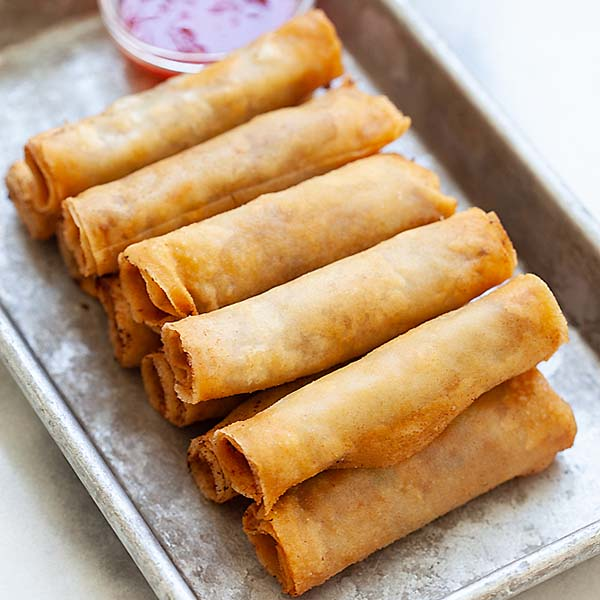

This is types of spring rolls from Philippines. Lumpia are made of thin paper-like or crepe-like
pastry skin called "lumpia wrapper" enveloping savory or sweet fillings.

Ingredients
- Ground pork
- Minced Carrots
- Soy sauce
- Minced Garlic
- Onion leaks
- salt
- Pepper
- Spring Roll wrapper
- oil
- cornstarch, dissolve in water
s
Procedure
- Combine the ground pork, carrot, garlic cloves, and onion into a bowl and mix well together.
- Slice the Eden Cheese into strips to be placed inside the wrapper.
- Prepare and lay out the lumpia wrappers to be filled.
- Scoop around 1 to 1/2 tablespoons of filling and place over a piece of lumpia wrapper.
- Spread the filling and add a slice of Eden Melt Sarap, then fold both sides of the wrapper and fold the bottom.
- Brush the cornstarch dissolved in water on the top end of the wrapper to help seal.
- Roll-up until completely wrapped. Repeat the steps for the other lumpias.
- Fill a pot with oil and deep fry over high heat. When the oil is hot, deep fry the lumpias until golden brown.
Back to home page